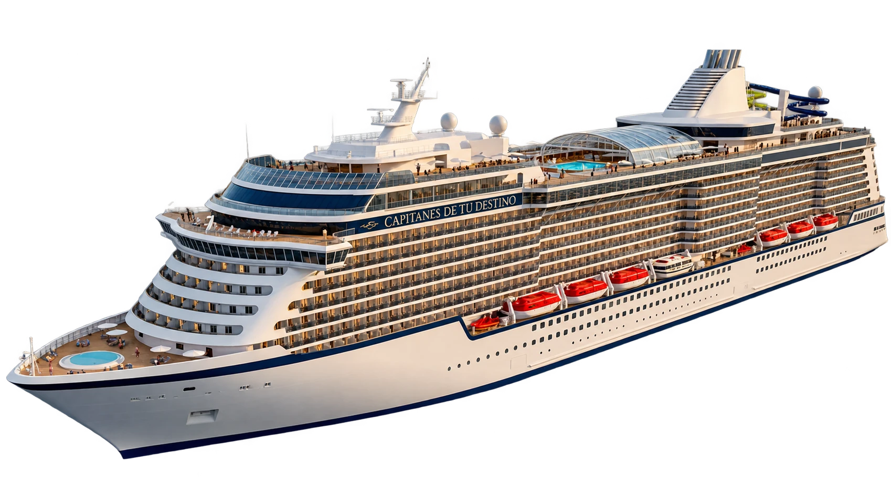

Imagina
con quién.
Hay viajes que empiezan con una conversación en casa. Piensa en las personas con quienes te gustaría compartir ese recuerdo.
CAPITANES DE TU DESTINO · CON CÉSAR MORENO
Ese primer crucero. Un recuerdo en familia. Un lugar que siempre imaginaste. Conoce un club privado de vacaciones y comienza a planificar tu próxima historia.
01 / CONOCE EL CLUB
Te explico las membresías, los puntos de recompensa y lo que necesitas conocer antes de decidir. Sin compromiso, a tu ritmo.
TU VIAJE COMIENZA ANTES DE EMBARCAR

01 — 03 UN PASO A LA VEZ
Hay viajes que empiezan con una conversación en casa. Piensa en las personas con quienes te gustaría compartir ese recuerdo.
Conoce los pagos y beneficios de cada membresía. Evalúa el compromiso mensual y cómo se ajusta a tu presupuesto.
Escucha experiencias reales y resuelve tus preguntas. La decisión de unirte al club siempre es tuya.
02 / SOY CÉSAR
«Hijo, te voy a llevar a un crucero».
A mis 37 años trabajaba en la Policía y nunca había salido de Colombia. Ni siquiera tenía pasaporte. Pero quería que mi hijo Jerónimo conociera un mundo que yo también soñaba descubrir.
Ingresé al club en marzo de 2020, con las dudas de una época incierta. En febrero de 2022 conocí Brasil. Después llegó nuestro primer crucero familiar por el Caribe: aquella promesa comenzaba a convertirse en recuerdos.
Hoy comparto lo que he aprendido para que otras personas puedan conocer el club y evaluar si encaja con sus propios sueños.
Conoce nuestra comunidad →03 / UNA DECISIÓN INFORMADA
Compara el pago inicial, las mensualidades y los puntos que recibes. Todos los importes están expresados en dólares estadounidenses.
Los Reward Points (RP) se aplican a reservas elegibles dentro del club, con límites y condiciones. No son efectivo ni una inversión, y no implican que el viaje completo quede cubierto. Los beneficios dobles requieren pagos mensuales puntuales.
Consultar contrato de membresía ↗CONFIANZA CON INFORMACIÓN
La presentación del club describe protección mediante Repayd del valor neto pagado y no utilizado ante insolvencia de InCruises, sujeta a los términos aplicables. No es una garantía de devolución por cualquier motivo.
Revisar información oficial ↗04 / CAPITANES DE TU DESTINO
Cada historia tiene un punto de partida distinto. Estos espacios reunirán las experiencias y fotografías que sus protagonistas autoricen compartir.
LA CEIBA · HONDURAS
Europa · septiembre 2024
Europa · octubre 2025
Próximo viaje previsto
Europa · septiembre 2027
COLOMBIANO EN PANAMÁ
Alaska · mayo 2026
Próximo viaje previsto
Europa · septiembre 2027
UNA HISTORIA DE LA COMUNIDAD
Europa · octubre 2025
Próximo viaje previsto
Europa · septiembre 2027
Vista de diseño: relatos compartidos por César. Fotografías, testimonios y autorizaciones pendientes antes de publicación. Las experiencias individuales no garantizan resultados similares.
ANTES DE DAR EL SIGUIENTE PASO
No. Puedes conocer y utilizar la membresía para viajar sin desarrollar la actividad de socio independiente.
STARTER no tiene cargo de activación. CLASSIC y PREMIUM incluyen activación más primera mensualidad. Puedes revisar el desglose en cada plan.
No. Son puntos de recompensa para aplicar a reservas elegibles dentro del club y están sujetos a condiciones de uso.
No presentamos la membresía como un préstamo o financiación de un viaje específico. Evalúa pagos, puntos y gastos adicionales de tus vacaciones.
Podrás conversar con César antes de decidir. Estamos preparando los canales de contacto y la agenda para esta página.
EL PRIMER PASO ES UNA CONVERSACIÓN
Conoce, pregunta y decide con información.